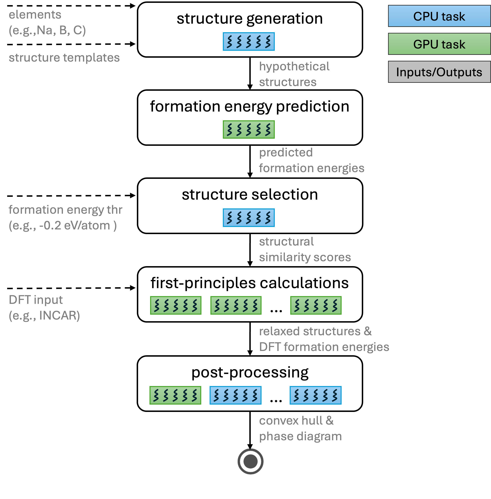

Automated Workflow
This document presents the VASP-based workflow depicted in the figure below.
{kind=link}

VASP-based workflow.
Workflow stages
1. Structure generation
Start from structures in the initial_structures directory and generate hypothetical structures:
Perform elemental substitution: the elements in each initial structure are replaced with the target elements under investigation.
Cover atomic arrangements by enumerating (or randomly shuffling) the order of substituted elements (i.e., all permutations for the given system).
Apply lattice scaling (typically from 0.94 to 1.06) to span realistic bond-length variations, since optimal bond lengths for the new elements may differ from the original structure.
The cross-product of element orderings and scale factors yields many variants: - Ternary: 30 variants per initial structure. - Quaternary: 24 possible orderings.
Inputs
Elements (e.g., Na, B, C) specified via JSON config
Structure templates specified via JSON config
Outputs
Hypothetical structures
Parsl executor: GENERATE_EXECUTOR_LABEL
2. CGCNN-based structure screening
Evaluate all generated structures with a Crystal Graph Convolutional Neural Network (CGCNN) to predict formation energies efficiently.
Select structures with low predicted formation energy as promising candidates, reducing the cost of subsequent first-principles calculations.
Inputs
Hypothetical structures
CGCNN-specific parameters (e.g., batch size) configurable via JSON config
Outputs
Predicted formation energies
Parsl executor: CGCNN_EXECUTOR_LABEL
3. Removal of similar structures
Identify and remove duplicates or near-duplicates using a structural-similarity threshold.
The deduplication step ensures that only non-equivalent structures are retained, typically narrowing the set to a manageable number (e.g., 1,000–5,000 structures) for detailed study.
Inputs
Structures with associated predicted formation energies
Formation energy threshold (configurable via JSON config)
Outputs
Structural similarity scores used to further filter the structures
Parsl executor: SELECT_EXECUTOR_LABEL
4. DFT calculations (relaxation and energy)
The filtered set of structures is subjected to first-principles calculations using Density Functional Theory (DFT) using VASP (extensible to other ab initio codes such as Quantum ESPRESSO).
Each structure undergoes full relaxation to find its lowest-energy geometry, followed by a self-consistent total-energy calculation.
The resulting relaxed structures and total energies provide the basis for thermodynamic analysis.
Inputs
Selected structures
DFT input files (
INCAR.rxandINCAR.en) from https://github.com/ML-AMD/exa-amd/tree/main/workflows/vasp_assets/
Outputs
Per-job directories containing the calculation artifacts
Summarized results for converged structures stored in
vasp_calc_result.csv
Parsl executor: VASP_EXECUTOR_LABEL
5. Post-processing: convex hull and stability analysis
Determine the formation energies of each structure relative to known stable phases.
Construct the convex hull to indentify structures that are: - Thermodynamically stable: on (or below) the current convex hull. - Metastable: low formation energy (< 0.05 eV/atom ) above the hull (Ehull < 0.05 eV/atom).
This analysis reveals new stable and metastable structures and updates the phase diagram for the target system.
Inputs
Relaxed structures
DFT formation energies
Outputs
Phase diagram
Convex hull
Parsl executor: POSTPROCESSING_LABEL